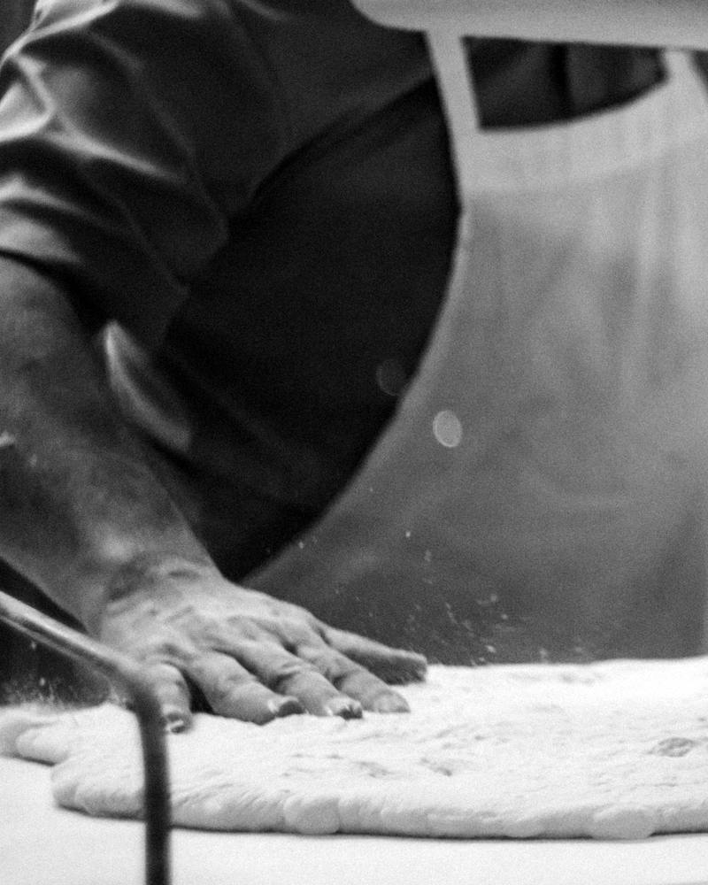
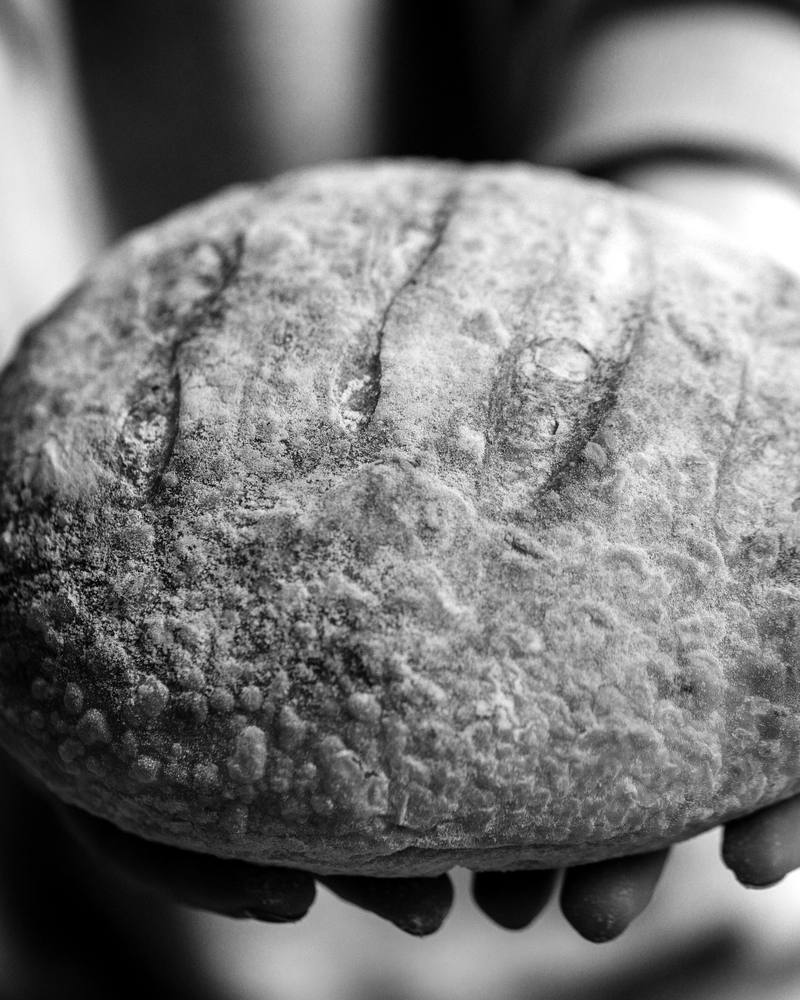
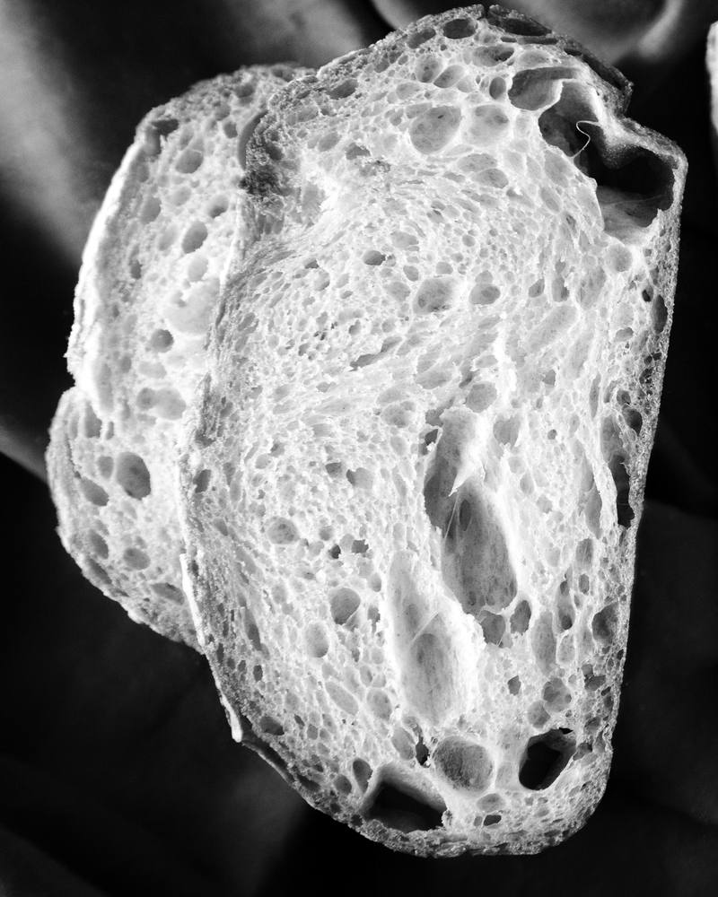

Folha do dia
O pão de amanhã encomenda-se hoje.
Até às 18h00. Levanta-se a partir das 7h30 e paga-se ao balcão.
Encomendar para amanhãFornada de terça, 6 de outubro
Contado às 11h40. Atualiza-se a cada encomenda.
-
Trigo com fermento natural 800 g 3,80 €Restam 12 de 40
-
Broa de milho 4,20 €EsgotadaVolta na fornada de quinta.
-
Centeio 4,50 €Restam 7
O pão
Fazemos três pães e mais nenhum. A massa leva farinha, água, sal e o fermento que alimentamos todos os dias desde 2019. Não leva fermento de pacote nem melhorantes.
Fermenta devagar, de um dia para o outro, e coze de madrugada no forno de lastro. Por isso se encomenda na véspera: amassamos só o que vai ser levantado.
- Trigo com fermento natural, 800 g
- Côdea estaladiça, miolo aberto e húmido. Aguenta quatro dias embrulhado num pano.
- Broa de milho
- Milho amarelo e um terço de centeio, à maneira do Minho. Só às terças e quintas.
- Centeio
- Denso e ácido, com sementes de alcaravia. Corta-se fino e dura uma semana.



Como se encomenda
-
Escolha até às 18h00
Diga que pães quer e quantos. Depois das 18h00 a fornada de amanhã fecha.
-
Recebe o número da encomenda
Guarde-o. É por ele que separamos o seu pão.
N.º 0412
-
Levante amanhã a partir das 7h30
O pão fica guardado em seu nome até ao fecho, às 14h00.
-
Pague ao balcão
Paga quando levanta, nunca antes. Carimbamos o talão.
N.º 0412Pago